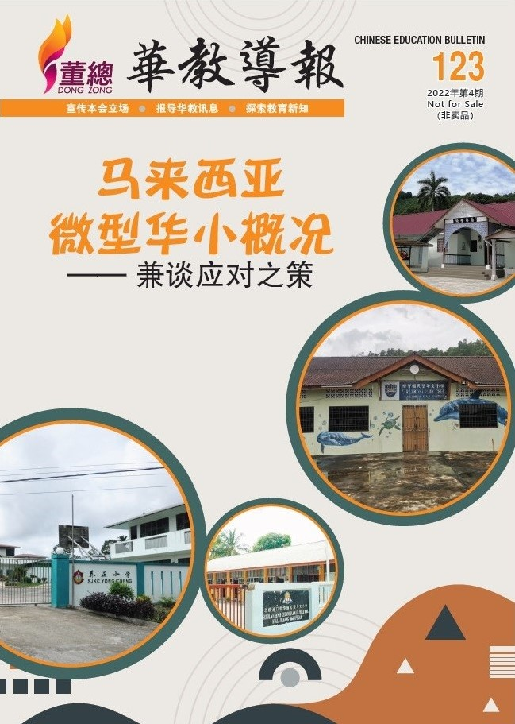

编者语

第15届全国大选顺利在2022年11月19日如期进行，然而在完成选票计算后，并无任何政党或政党联盟取得国会下议院过半数的议席，陷入悬峙政府状态。最后，所幸首相人选在几经波折后，迟至大选后第5天正式出炉。董教总在大选前后发布文告，希望朝野政党联盟正视几项教育课题，同时也期盼新任首相能保障多源流教育体系的发展，维护母语教育的平等权利。
自2020年爆发新冠疫情后，今年9月本会正式组织庞大的团队进行跨州拜访各属会及华校。9月26日至29日，走访柔佛董教联合会与州内华校。此外，11月22日至24日拜访沙巴独中董总和州内华校，第93次董总各属会联席会议也同时于11月25日在沙巴召开。
本期焦点为“微型华小课题”，近年乡区人口外移和华裔少子化问题严重，许多乡区华小因学生人数锐减，而逐渐变成微型华小。长期以来政府就不断地要推行微型华小合并计划，惟因华社强烈反对而暂时搁置，微型华小未来的动向成为华社关注的课题。另外，本期华教人物的主角为前董总主席叶鸿恩先生，虽然口述历史团队当初仅与叶鸿恩主席进行了一小时半的采访，过后就因叶鸿恩主席辞世无缘再采访，但短短一小时半的采访内容，已弥足珍贵，足以让读者更贴近地了解叶鸿恩主席对华教的奉献。
其他精彩内容包括：“2022年第七届华教杯”、“华文独中线上音乐会及体育表演会”、“全国华文独中学生事务行政人员成长大会”、“全国华文独中统一考试统计简报”、“2022年全国华文独中教育数码化进程调查简报”等。
时光悄然飞逝，在迎来新届政府的同时，2022年也接近尾声了，希望马来西亚在新任首相带领下能有更好的发展，也祝福各位读者一切顺心。